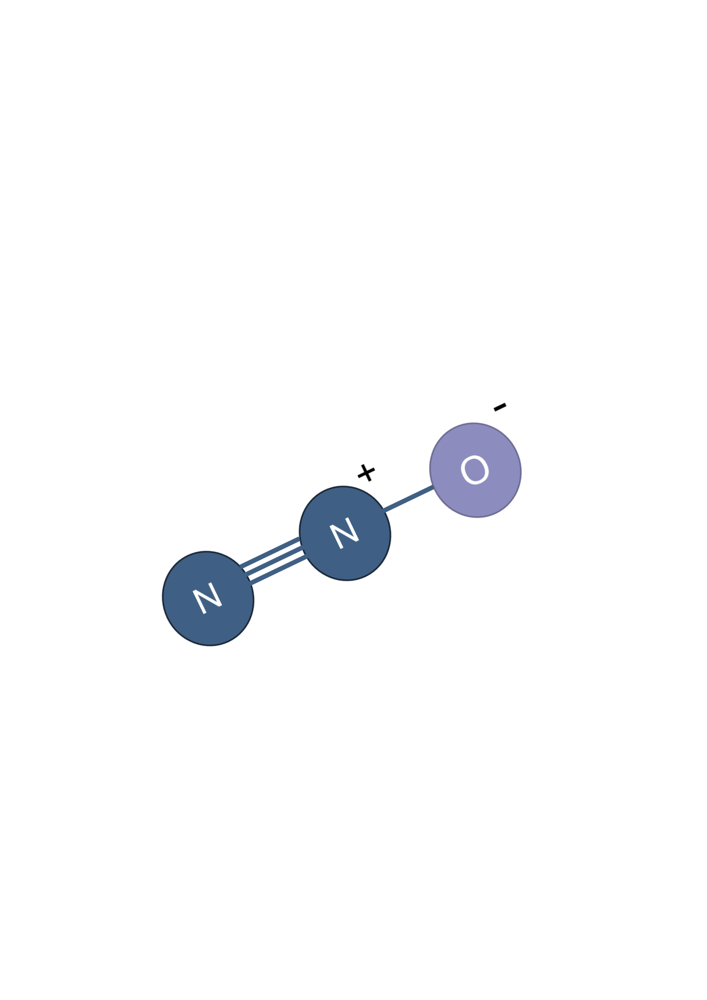

What is Nitrous Oxide?
Nitrous oxide, sometimes called "gas and air," is a familiar medical treatment used worldwide as a fast-acting painkiller during procedures such as dental work or childbirth.

How it feels
Nitrous oxide can cause mild, short-lived changes in consciousness, including a sense of detachment, also known as dissociation. It is sometimes called "laughing gas" because it causes euphoria in some people.
Compared to many other consciousness-altering drugs, nitrous oxide's effects are usually mild and short-lived.
Safety
Nitrous oxide has been used safely as a medicine for decades. It is very safe when administered in a controlled medical research setting.
Why is it being studied as a treatment for PTSD?
Growing scientific evidence suggests that nitrous oxide may reduce symptoms of certain mental health conditions.
We are testing whether nitrous oxide can help people with PTSD by reducing unpleasant memories of traumatic events.